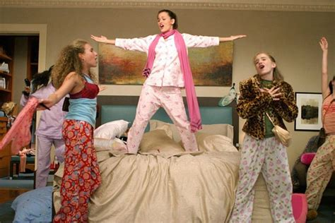 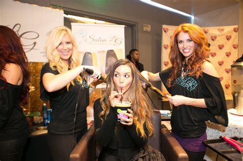 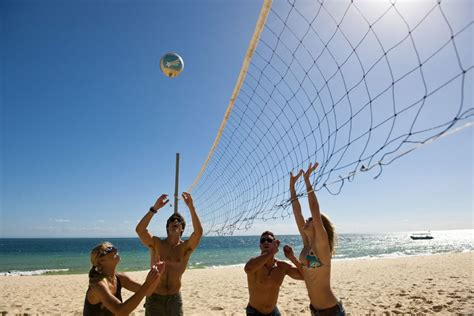
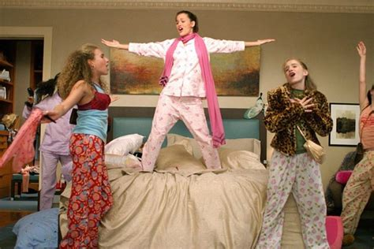 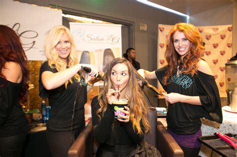 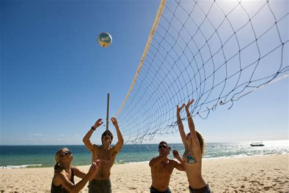
Pictured above are activities that Elizabeth enjoys doing with her friends!
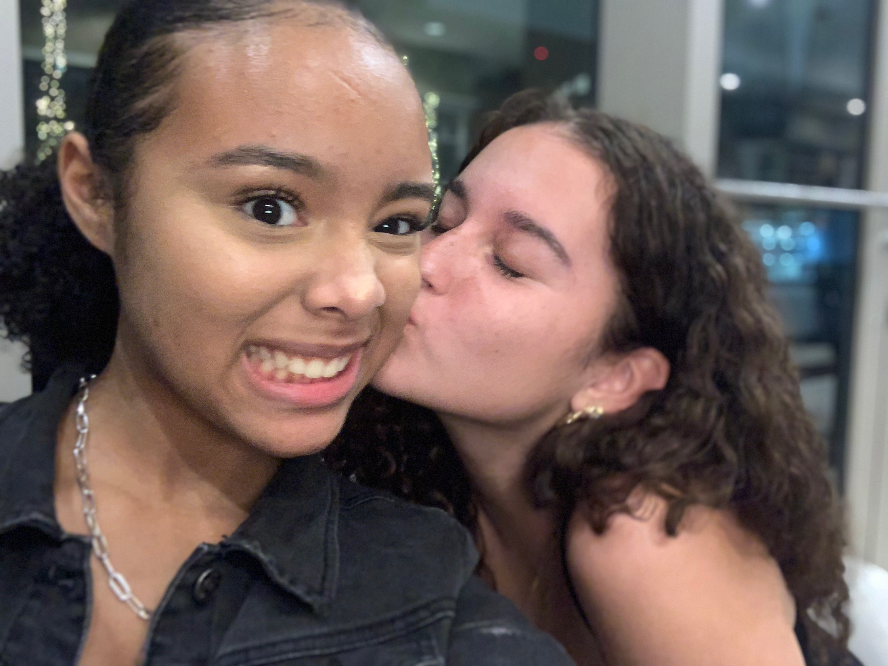
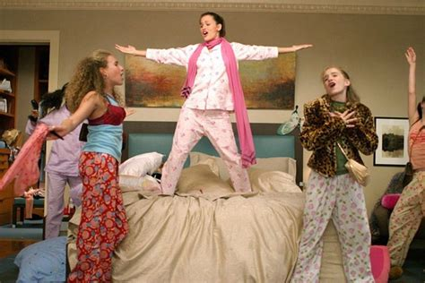 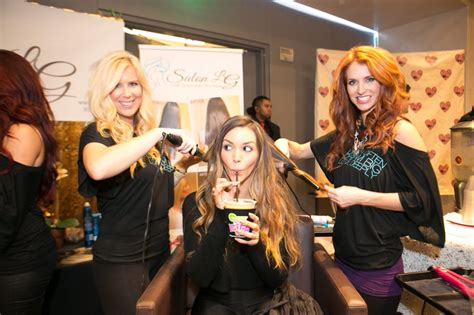 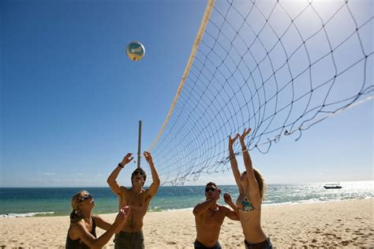
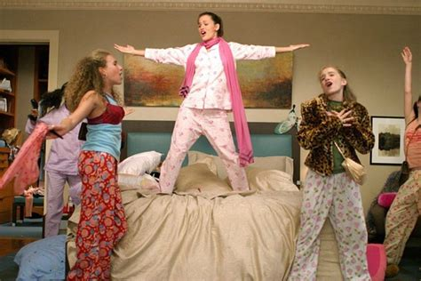 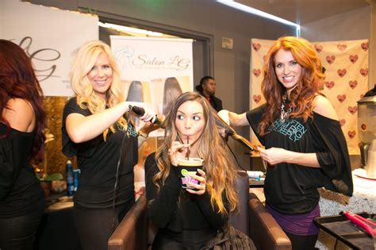 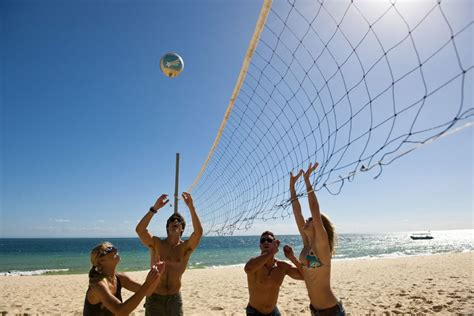
The is Marisol. Elizabeth and Marisol have been friends since the 7th grade. Their friendship started because they both liked BRATZ dolls, funny right! Mariosl was born on the 10th of May in 2002 and is currently 17 years old. They go to different schools now however stil keep in touch. Marisol plans to go to the U.K to study fashion and hopes to create her own brand someday. Elizabeth describes her friend to be loving, funny and beautiful both inside and out!
These girls are very importnat to Elizabeth she's known them for as long as she can remeber! They have all been through so much together. They're all so different, Elizabeth would describe Monina, pictured on the far left, to be the mom of the group as she always goes the extra mile to make sure the rest of us are good. Kassi is the planner of the group as she always organizes sleepovers, parties and other get-togethers we have. She describes her self to me the baby of the group and Denise is the grandma of the group, always tired and hungry!
Liz, Garrick and Manu are picture in this photo. They're friends from school, out celebrating Garricks 18th birthday! Elizabeth loves their personalities as they're both very honest no matter what and share a good sense of humor.
| Females | Males |
|---|---|
| Vini | Cody |
| Ashleigh | Brandon |
| Becca | Fini |
| Shayla | Joseph |
| Manu | Travis |